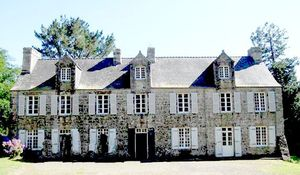
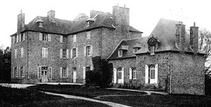
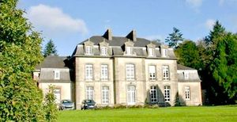
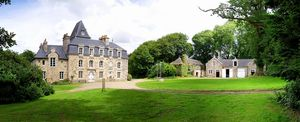

Recensement Jean-Claude Truffet




| Département | 29 — Finistère |
| Canton | Pont-de-Buis-lès-Quimerc |
| Commune | Saint-Urbain |
| Type d'édifice | Château |
| Période d'origine | XV-XVIII |
| Coordonnées GPS | 48° 24' Nord, 4° 14' Ouest |
Deux châteaux à St-Urbain; Beuzidou, Kerdoulas et Créac'h Balbé et à deux K.M. à l'Est à Dirinon château de Lesquivit. BEUZIDOU, château construit à l'emplacement d'un ancien édifice appartenant à la famille Courtois, puis à la famille Le Veyer et de Flotte. Au XVe siècle en effet, les Courtois sont les seigneurs de Beuzidou. En 1500, le manoir devient, à la suite d'un mariage, la propriété de la famille Le Veyer. En 1761 le mariage de Marie Le Veyer du Beuzidou avec Paul de Flotte est à l'origine de la famille de Flotte Le Veyer, qui est propriétaire de la demeure jusqu'en 1901. Au XXe siècle, l'édifice appartient au général de division Jacques de Parcevaux jusqu'à sa mort en 2009. KERDAOULAS, la tour d'angle de ce manoir date des années 1500. À l'origine, les seigneurs de Kerdaoulas sont les seigneurs de Névet. En 1455, Jeanne de Névet, dame de Kerdaoulas, épouse Alain Buzic. En 1695 cette famille se fond dans la lignée des Goezbriant. Dans les années 1890, la famille Bréart de Boisanger fait l'acquisition du manoir et s'y installe. Pendant la deuxième Guerre mondiale, l'amiral Pierre de Boisanger, alors maire de Saint Urbain, donne asile à des parachutistes anglais dans son manoir. C'est de Kerdaoulas que le 5 août 1944, le commando part pour attaquer la Kommandantur de Daoulas.
CREAC'H BALBE, fut construit en 1860 pour la famille de Parcevaux, dont le petit fils, le Général Jacques de Parcevaux fut maire de Saint-Urbain dans les années 1980. S'appelait autrefois le Manoir de la Salle. En 1940 il accueille l'école ménagère rurale et depuis 1967, Creac'h Balbé est la propriété de religieuses, "les Filles du Saint-Esprit", qui en font une maison d'accueil. Édifice néo-XVIIIe, de plan symétrique, composé d'un corps de logis central encadré de deux pavillons bas dans le même alignement. Élévation ordonnancée à cinq travées ; avant-corps central en légère saillie. Vendu en 1926 à la famille Bréart de Boisanger, celle-ci en 1940 met le château à disposition des filles du Saint-Esprit qui y créent une École ménagère rurale, puis en 1967, une maison d'accueil ouverte à des groupes variés du monde ecclésial, religieux ou éducatif. Le château de Créac'h-Balbé est devenu depuis un centre Spirituel du Diocèse de Quimper. LESQUIVIT, construit au XVIIIe siècle par la famille du Louët (par exemple Achille IV de Harlay, seigneur comte de Beaumont, avocat général au Parlement de Paris et conseiller d'État (décédé à Paris le 23 juillet 1717), époux de Anne-Renée Louise du Louet (fille unique de Robert-Louis du Louët, marquis de Coëtjunval (en Ploudaniel), doyen du Parlement de Bretagne, héritière de Coëtjunval, y habita au début du XVIIIe siècle). Le château de Lesquivit fut ensuite habité par la famille Bernard de Marigny. À la suite du décès le 16 février 1939 à l'âge de 93 ans de Fanny Barazer de Lannurien, vicomtesse de Lesguern (en Saint-Frégant), alors propriétaire du château, il est mis en vente en 1939.
Beuzidou; famille Le Veyer Kerdaoulas : famille Bréart de Boisanger Créac'h; du Général Jacques de Parcevaux
"
Deux châteaux à St-Urbain; Beuzidou grav-1 Kerdoulas grav 2 et Créac'h Balbé grav-3 et à deux K.M. à l'Est là dirinon château de Lesquivit grav 4. Beuzidou GPS : 48° 24' Nord, 4° 14' Ouest